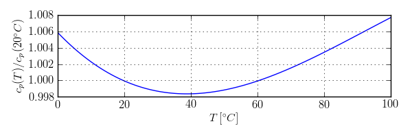

Package with model for liquid water with temperature-dependent density
This medium package models liquid water.
The mass density is computed using a 3rd order polynomial, which yields the density as a function of temperature as shown in the figure below. Note, however, that computing density as a function of temperature can lead to considerably slower computing time compared to using Buildings.Media.Water in which the density is a constant. We therefore recommend to use Buildings.Media.Water for typical building energy simulations.

For the specific heat capacities at constant pressure and at constant volume, a constant value of 4184 J/(kg K), which corresponds to 20°C is used. The figure below shows the relative error of the specific heat capacity that is introduced by this simplification. Using a constant value for the specific heat capacity allows to compute temperature from enthalpy without having to solve an implicit equation, and therefore leads to faster simulation.

The enthalpy is computed using the convention that h=0 if T=0 °C.
Specific heat capacity, thermal conductivity and viscosity are constant. Water is modeled as an incompressible liquid. There are no phase changes.
Extends from Modelica.Media.Interfaces.PartialPureSubstance (Base class for pure substances of one chemical substance), Modelica.Icons.Package (Icon for standard packages).
| Name | Description |
|---|---|
| Thermodynamic state variables | |
| cp_const=4184 | Specific heat capacity at constant pressure |
| Base properties | |
| Return the density | |
| Return the dynamic viscosity | |
| Return the specific enthalpy | |
| Return the specific enthalpy of liquid | |
| Return the specific enthalpy | |
| Return the specific entropy | |
| Return the specific Gibbs energy | |
| Return the specific Helmholtz energy | |
| Return the isentropic enthalpy | |
| Return the isobaric expansion coefficient | |
| Return the isothermal compressibility factor | |
| Return the partial derivative of density with respect to pressure at constant temperature | |
| Return the partial derivative of density with respect to temperature at constant pressure | |
| Return the partial derivative of density with respect to mass fractions at constant pressure and temperature | |
| Return the specific heat capacity at constant pressure | |
| Return the specific heat capacity at constant volume | |
| Return the thermal conductivity | |
| Return the pressure | |
| Return the temperature | |
| Return the molar mass | |
| Return thermodynamic state from d, T, and X or Xi | |
| Return the thermodynamic state as function of pressure p, specific enthalpy h and composition X or Xi | |
| Return the thermodynamic state as function of p, T and composition X or Xi | |
| Return the thermodynamic state as function of p, s and composition X or Xi | |
| cv_const=cp_const | Specific heat capacity at constant volume |
| a_const=1484 | Constant velocity of sound |
| MM_const=0.018015268 | Molar mass |
| Return the derivative of the specific heat capacity at constant pressure | |
| Temperature derivative of enthalpy of liquid per unit mass of liquid | |
| Return the kinematic viscosity | |
| Inherited | |
| Return thermodynamic state from p and T | |
| Return thermodynamic state from p and h | |
| Return thermodynamic state from p and s | |
| Return thermodynamic state from d and T | |
| Return density from p and h | |
| Return temperature from p and h | |
| Return pressure from d and T | |
| Return specific enthalpy from d and T | |
| Return specific enthalpy from p and s | |
| Return temperature from p and s | |
| Return density from p and s | |
| Return specific enthalpy from p and T | |
| Return density from p and T | |
| ThermoStates | Enumeration type for independent variables |
| mediumName="unusablePartialMedium" | Name of the medium |
| substanceNames={mediumName} | Names of the mixture substances. Set substanceNames={mediumName} if only one substance. |
| extraPropertiesNames=fill("", 0) | Names of the additional (extra) transported properties. Set extraPropertiesNames=fill("",0) if unused |
| singleState | = true, if u and d are not a function of pressure |
| reducedX=true | = true if medium contains the equation sum(X) = 1.0; set reducedX=true if only one substance (see docu for details) |
| fixedX=false | = true if medium contains the equation X = reference_X |
| reference_p=101325 | Reference pressure of Medium: default 1 atmosphere |
| reference_T=298.15 | Reference temperature of Medium: default 25 deg Celsius |
| reference_X=fill(1/nX, nX) | Default mass fractions of medium |
| p_default=101325 | Default value for pressure of medium (for initialization) |
| T_default=Modelica.SIunits.Conversions.from_degC(20) | Default value for temperature of medium (for initialization) |
| h_default=specificEnthalpy_pTX(p_default, T_default, X_default) | Default value for specific enthalpy of medium (for initialization) |
| X_default=reference_X | Default value for mass fractions of medium (for initialization) |
| nS=size(substanceNames, 1) | Number of substances |
| nX=nS | Number of mass fractions |
| nXi=if fixedX then 0 else if reducedX then nS - 1 else nS | Number of structurally independent mass fractions (see docu for details) |
| nC=size(extraPropertiesNames, 1) | Number of extra (outside of standard mass-balance) transported properties |
| C_nominal=1.0e-6*ones(nC) | Default for the nominal values for the extra properties |
| Return thermodynamic state so that it smoothly approximates: if x > 0 then state_a else state_b | |
| Return the Prandtl number | |
| Alias for deprecated name | |
| Alias for deprecated name | |
| Return isentropic exponent | |
| Return velocity of sound | |
| Alias for isobaricExpansionCoefficient for user convenience | |
| Alias of isothermalCompressibility for user convenience | |
| Return density derivative w.r.t. pressure at const specific enthalpy | |
| Return density derivative w.r.t. specific enthalpy at constant pressure | |
| Return specific enthalpy from p, T, and X or Xi | |
| Return specific enthalpy from p, T, and X or Xi | |
| Return density from p, T, and X or Xi | |
| Return temperature from p, h, and X or Xi | |
| Return density from p, h, and X or Xi | |
| Return temperature from p,s, and X or Xi | |
| Return density from p, s, and X or Xi | |
| Return specific enthalpy from p, s, and X or Xi | |
| MassFlowRate | Type for mass flow rate with medium specific attributes |
| AbsolutePressure | Type for absolute pressure with medium specific attributes |
| Density | Type for density with medium specific attributes |
| DynamicViscosity | Type for dynamic viscosity with medium specific attributes |
| EnthalpyFlowRate | Type for enthalpy flow rate with medium specific attributes |
| MassFraction | Type for mass fraction with medium specific attributes |
| MoleFraction | Type for mole fraction with medium specific attributes |
| MolarMass | Type for molar mass with medium specific attributes |
| MolarVolume | Type for molar volume with medium specific attributes |
| IsentropicExponent | Type for isentropic exponent with medium specific attributes |
| SpecificEnergy | Type for specific energy with medium specific attributes |
| SpecificInternalEnergy | Type for specific internal energy with medium specific attributes |
| SpecificEnthalpy | Type for specific enthalpy with medium specific attributes |
| SpecificEntropy | Type for specific entropy with medium specific attributes |
| SpecificHeatCapacity | Type for specific heat capacity with medium specific attributes |
| SurfaceTension | Type for surface tension with medium specific attributes |
| Temperature | Type for temperature with medium specific attributes |
| ThermalConductivity | Type for thermal conductivity with medium specific attributes |
| PrandtlNumber | Type for Prandtl number with medium specific attributes |
| VelocityOfSound | Type for velocity of sound with medium specific attributes |
| ExtraProperty | Type for unspecified, mass-specific property transported by flow |
| CumulativeExtraProperty | Type for conserved integral of unspecified, mass specific property |
| ExtraPropertyFlowRate | Type for flow rate of unspecified, mass-specific property |
| IsobaricExpansionCoefficient | Type for isobaric expansion coefficient with medium specific attributes |
| DipoleMoment | Type for dipole moment with medium specific attributes |
| DerDensityByPressure | Type for partial derivative of density with respect to pressure with medium specific attributes |
| DerDensityByEnthalpy | Type for partial derivative of density with respect to enthalpy with medium specific attributes |
| DerEnthalpyByPressure | Type for partial derivative of enthalpy with respect to pressure with medium specific attributes |
| DerDensityByTemperature | Type for partial derivative of density with respect to temperature with medium specific attributes |
| DerTemperatureByPressure | Type for partial derivative of temperature with respect to pressure with medium specific attributes |
| Saturation properties of two phase medium | |
| Validity limits for fluid model | |
| FixedPhase | Phase of the fluid: 1 for 1-phase, 2 for two-phase, 0 for not known, e.g., interactive use |
| The most basic version of a record used in several degrees of detail | |
| The ideal gas version of a record used in several degrees of detail | |
| The two phase fluid version of a record used in several degrees of detail | |
constant Modelica.SIunits.SpecificHeatCapacity cp_const = 4184 "Specific heat capacity at constant pressure";
final constant Modelica.SIunits.SpecificHeatCapacity cv_const = cp_const "Specific heat capacity at constant volume";
constant Modelica.SIunits.VelocityOfSound a_const=1484 "Constant velocity of sound";
constant Modelica.SIunits.MolarMass MM_const=0.018015268 "Molar mass";
 Buildings.Media.Specialized.Water.TemperatureDependentDensity.FluidConstants
Buildings.Media.Specialized.Water.TemperatureDependentDensity.FluidConstants| Type | Name | Default | Description |
|---|---|---|---|
| String | iupacName | "oxidane" | Complete IUPAC name (or common name, if non-existent) |
| String | casRegistryNumber | "7732-18-5" | Chemical abstracts sequencing number (if it exists) |
| String | chemicalFormula | "H2O" | Chemical formula, (brutto, nomenclature according to Hill |
| String | structureFormula | "H2O" | Chemical structure formula |
| MolarMass | molarMass | MM_const | Molar mass [kg/mol] |
Buildings.Media.Specialized.Water.TemperatureDependentDensity.ThermodynamicStateThermodynamic state variables
Extends from (Minimal variable set that is available as input argument to every medium function).
 Buildings.Media.Specialized.Water.TemperatureDependentDensity.BaseProperties
Buildings.Media.Specialized.Water.TemperatureDependentDensity.BasePropertiesBase properties
Base properties of the medium.
| Type | Name | Default | Description |
|---|---|---|---|
| Advanced | |||
| Boolean | preferredMediumStates | true | = true if StateSelect.prefer shall be used for the independent property variables of the medium |
 Buildings.Media.Specialized.Water.TemperatureDependentDensity.density
Buildings.Media.Specialized.Water.TemperatureDependentDensity.densityReturn the density
This function computes the density as a function of temperature.
The function is based on the IDA implementation in therpro.nmf, which
implements
d := 1000.12 + 1.43711e-2*T_degC - 5.83576e-3*T_degC^2 + 1.5009e-5*T_degC^3;
This has been converted to Kelvin, which resulted in the above expression. In addition, below 5 °C and above 100 °C, the density is replaced by a linear function to avoid inflection points. This linear extension is such that the density is once continuously differentiable.
Extends from (Return density).
| Type | Name | Default | Description |
|---|---|---|---|
| ThermodynamicState | state | Thermodynamic state record |
| Type | Name | Description |
|---|---|---|
| Density | d | Density [kg/m3] |
Buildings.Media.Specialized.Water.TemperatureDependentDensity.dynamicViscosityReturn the dynamic viscosity
This function computes the dynamic viscosity.
Extends from (Return dynamic viscosity).
| Type | Name | Default | Description |
|---|---|---|---|
| ThermodynamicState | state | Thermodynamic state record |
| Type | Name | Description |
|---|---|---|
| DynamicViscosity | eta | Dynamic viscosity [Pa.s] |
Buildings.Media.Specialized.Water.TemperatureDependentDensity.specificEnthalpyReturn the specific enthalpy
This function computes the specific enthalpy.
Extends from (Return specific enthalpy).
| Type | Name | Default | Description |
|---|---|---|---|
| ThermodynamicState | state | Thermodynamic state record |
| Type | Name | Description |
|---|---|---|
| SpecificEnthalpy | h | Specific enthalpy [J/kg] |
Buildings.Media.Specialized.Water.TemperatureDependentDensity.enthalpyOfLiquidReturn the specific enthalpy of liquid
This function computes the specific enthalpy of liquid water.
Extends from Modelica.Icons.Function (Icon for functions).
| Type | Name | Default | Description |
|---|---|---|---|
| Temperature | T | Temperature [K] |
| Type | Name | Description |
|---|---|---|
| SpecificEnthalpy | h | Specific enthalpy [J/kg] |
Buildings.Media.Specialized.Water.TemperatureDependentDensity.specificInternalEnergyReturn the specific enthalpy
This function computes the specific internal energy.
Extends from (Return specific internal energy).
| Type | Name | Default | Description |
|---|---|---|---|
| ThermodynamicState | state | Thermodynamic state record |
| Type | Name | Description |
|---|---|---|
| SpecificEnergy | u | Specific internal energy [J/kg] |
Buildings.Media.Specialized.Water.TemperatureDependentDensity.specificEntropyReturn the specific entropy
This function computes the specific entropy.
To obtain the state for a given pressure, entropy and mass fraction, use Buildings.Media.Air.setState_psX.
Extends from Modelica.Icons.Function (Icon for functions), (Return specific entropy).
| Type | Name | Default | Description |
|---|---|---|---|
| ThermodynamicState | state | Thermodynamic state record |
| Type | Name | Description |
|---|---|---|
| SpecificEntropy | s | Specific entropy [J/(kg.K)] |
Buildings.Media.Specialized.Water.TemperatureDependentDensity.specificGibbsEnergyReturn the specific Gibbs energy
This function computes the specific Gibbs energy.
Extends from Modelica.Icons.Function (Icon for functions), (Return specific Gibbs energy).
| Type | Name | Default | Description |
|---|---|---|---|
| ThermodynamicState | state | Thermodynamic state record |
| Type | Name | Description |
|---|---|---|
| SpecificEnergy | g | Specific Gibbs energy [J/kg] |
Buildings.Media.Specialized.Water.TemperatureDependentDensity.specificHelmholtzEnergyReturn the specific Helmholtz energy
This function computes the specific Helmholtz energy.
Extends from Modelica.Icons.Function (Icon for functions), (Return specific Helmholtz energy).
| Type | Name | Default | Description |
|---|---|---|---|
| ThermodynamicState | state | Thermodynamic state record |
| Type | Name | Description |
|---|---|---|
| SpecificEnergy | f | Specific Helmholtz energy [J/kg] |
Buildings.Media.Specialized.Water.TemperatureDependentDensity.isentropicEnthalpyReturn the isentropic enthalpy
This function computes the specific enthalpy for
an isentropic state change from the temperature
that corresponds to the state refState
to reference_T.
Extends from (Return isentropic enthalpy).
| Type | Name | Default | Description |
|---|---|---|---|
| AbsolutePressure | p_downstream | Downstream pressure [Pa] | |
| ThermodynamicState | refState | Reference state for entropy |
| Type | Name | Description |
|---|---|---|
| SpecificEnthalpy | h_is | Isentropic enthalpy [J/kg] |
Buildings.Media.Specialized.Water.TemperatureDependentDensity.isobaricExpansionCoefficientReturn the isobaric expansion coefficient
This function returns the isobaric expansion coefficient,
βp = - 1 ⁄ v (∂ v ⁄ ∂ T)p,
where v is the specific volume, T is the temperature and p is the pressure.
Extends from (Return overall the isobaric expansion coefficient beta).
| Type | Name | Default | Description |
|---|---|---|---|
| ThermodynamicState | state | Thermodynamic state record |
| Type | Name | Description |
|---|---|---|
| IsobaricExpansionCoefficient | beta | Isobaric expansion coefficient [1/K] |
Buildings.Media.Specialized.Water.TemperatureDependentDensity.isothermalCompressibilityReturn the isothermal compressibility factor
This function returns the isothermal compressibility coefficient, which is zero as this medium is incompressible. The isothermal compressibility is defined as
κT = - 1 ⁄ v (∂ v ⁄ ∂ p)T,
where v is the specific volume, T is the temperature and p is the pressure.
Extends from (Return overall the isothermal compressibility factor).
| Type | Name | Default | Description |
|---|---|---|---|
| ThermodynamicState | state | Thermodynamic state record |
| Type | Name | Description |
|---|---|---|
| IsothermalCompressibility | kappa | Isothermal compressibility [1/Pa] |
Buildings.Media.Specialized.Water.TemperatureDependentDensity.density_derp_TReturn the partial derivative of density with respect to pressure at constant temperature
This function returns the partial derivative of density with respect to pressure at constant temperature, which is zero as the medium is incompressible.
Extends from (Return density derivative w.r.t. pressure at const temperature).
| Type | Name | Default | Description |
|---|---|---|---|
| ThermodynamicState | state | Thermodynamic state record |
| Type | Name | Description |
|---|---|---|
| DerDensityByPressure | ddpT | Density derivative w.r.t. pressure [s2/m2] |
Buildings.Media.Specialized.Water.TemperatureDependentDensity.density_derT_pReturn the partial derivative of density with respect to temperature at constant pressure
This function computes the derivative of density with respect to temperature at constant pressure.
Extends from (Return density derivative w.r.t. temperature at constant pressure).
| Type | Name | Default | Description |
|---|---|---|---|
| ThermodynamicState | state | Thermodynamic state record |
| Type | Name | Description |
|---|---|---|
| DerDensityByTemperature | ddTp | Density derivative w.r.t. temperature [kg/(m3.K)] |
Buildings.Media.Specialized.Water.TemperatureDependentDensity.density_derXReturn the partial derivative of density with respect to mass fractions at constant pressure and temperature
This function returns the partial derivative of density with respect to mass fraction, which is zero as the medium is a single substance.
Extends from (Return density derivative w.r.t. mass fraction).
| Type | Name | Default | Description |
|---|---|---|---|
| ThermodynamicState | state | Thermodynamic state record |
| Type | Name | Description |
|---|---|---|
| Density | dddX[nX] | Derivative of density w.r.t. mass fraction [kg/m3] |
Buildings.Media.Specialized.Water.TemperatureDependentDensity.specificHeatCapacityCpReturn the specific heat capacity at constant pressure
This function returns the specific heat capacity at constant pressure.
Extends from (Return specific heat capacity at constant pressure).
| Type | Name | Default | Description |
|---|---|---|---|
| ThermodynamicState | state | Thermodynamic state record |
| Type | Name | Description |
|---|---|---|
| SpecificHeatCapacity | cp | Specific heat capacity at constant pressure [J/(kg.K)] |
Buildings.Media.Specialized.Water.TemperatureDependentDensity.specificHeatCapacityCvReturn the specific heat capacity at constant volume
This function computes the specific heat capacity at constant volume.
Extends from (Return specific heat capacity at constant volume).
| Type | Name | Default | Description |
|---|---|---|---|
| ThermodynamicState | state | Thermodynamic state record |
| Type | Name | Description |
|---|---|---|
| SpecificHeatCapacity | cv | Specific heat capacity at constant volume [J/(kg.K)] |
Buildings.Media.Specialized.Water.TemperatureDependentDensity.thermalConductivityReturn the thermal conductivity
This function returns the thermal conductivity. The expression is obtained from Ramires et al. (1995).
Ramires, Maria L. V. and Nieto de Castro, Carlos A. and Nagasaka, Yuchi and Nagashima, Akira and Assael, Marc J. and Wakeham, William A. Standard Reference Data for the Thermal Conductivity of Water. Journal of Physical and Chemical Reference Data, 24, p. 1377-1381, 1995. DOI:10.1063/1.555963.
Extends from (Return thermal conductivity).
| Type | Name | Default | Description |
|---|---|---|---|
| ThermodynamicState | state | Thermodynamic state record |
| Type | Name | Description |
|---|---|---|
| ThermalConductivity | lambda | Thermal conductivity [W/(m.K)] |
Buildings.Media.Specialized.Water.TemperatureDependentDensity.pressureReturn the pressure
This function returns the pressure.
Extends from (Return pressure).
| Type | Name | Default | Description |
|---|---|---|---|
| ThermodynamicState | state | Thermodynamic state record |
| Type | Name | Description |
|---|---|---|
| AbsolutePressure | p | Pressure [Pa] |
Buildings.Media.Specialized.Water.TemperatureDependentDensity.temperatureReturn the temperature
This function returns the temperature.
Extends from (Return temperature).
| Type | Name | Default | Description |
|---|---|---|---|
| ThermodynamicState | state | Thermodynamic state record |
| Type | Name | Description |
|---|---|---|
| Temperature | T | Temperature [K] |
Buildings.Media.Specialized.Water.TemperatureDependentDensity.molarMassReturn the molar mass
This function returns the molar mass, which is assumed to be constant.
Extends from (Return the molar mass of the medium).
| Type | Name | Default | Description |
|---|---|---|---|
| ThermodynamicState | state | Thermodynamic state record |
| Type | Name | Description |
|---|---|---|
| MolarMass | MM | Mixture molar mass [kg/mol] |
Buildings.Media.Specialized.Water.TemperatureDependentDensity.setState_dTXReturn thermodynamic state from d, T, and X or Xi
Extends from Modelica.Icons.Function (Icon for functions).
| Type | Name | Default | Description |
|---|---|---|---|
| Density | d | Density [kg/m3] | |
| Temperature | T | Temperature [K] | |
| MassFraction | X[:] | reference_X | Mass fractions [kg/kg] |
| Type | Name | Description |
|---|---|---|
| ThermodynamicState | state | Thermodynamic state record |
Buildings.Media.Specialized.Water.TemperatureDependentDensity.setState_phXReturn the thermodynamic state as function of pressure p, specific enthalpy h and composition X or Xi
This function returns the thermodynamic state for a given pressure, specific enthalpy and composition.
Extends from (Return thermodynamic state as function of p, h and composition X or Xi).
| Type | Name | Default | Description |
|---|---|---|---|
| AbsolutePressure | p | Pressure [Pa] | |
| SpecificEnthalpy | h | Specific enthalpy [J/kg] | |
| MassFraction | X[:] | reference_X | Mass fractions [kg/kg] |
| Type | Name | Description |
|---|---|---|
| ThermodynamicState | state | Thermodynamic state record |
Buildings.Media.Specialized.Water.TemperatureDependentDensity.setState_pTXReturn the thermodynamic state as function of p, T and composition X or Xi
This function returns the thermodynamic state for a given pressure, temperature and composition.
Extends from (Return thermodynamic state as function of p, T and composition X or Xi).
| Type | Name | Default | Description |
|---|---|---|---|
| AbsolutePressure | p | Pressure [Pa] | |
| Temperature | T | Temperature [K] | |
| MassFraction | X[:] | reference_X | Mass fractions [kg/kg] |
| Type | Name | Description |
|---|---|---|
| ThermodynamicState | state | Thermodynamic state record |
Buildings.Media.Specialized.Water.TemperatureDependentDensity.setState_psXReturn the thermodynamic state as function of p, s and composition X or Xi
This function returns the thermodynamic state based on pressure, specific entropy and mass fraction.
The state is computed by symbolically solving Buildings.Media.Water.Detailed.specificEntropy for temperature.
Extends from (Return thermodynamic state as function of p, s and composition X or Xi).
| Type | Name | Default | Description |
|---|---|---|---|
| AbsolutePressure | p | Pressure [Pa] | |
| SpecificEntropy | s | Specific entropy [J/(kg.K)] | |
| MassFraction | X[:] | reference_X | Mass fractions [kg/kg] |
| Type | Name | Description |
|---|---|---|
| ThermodynamicState | state | Thermodynamic state record |
Buildings.Media.Specialized.Water.TemperatureDependentDensity.der_specificHeatCapacityCpReturn the derivative of the specific heat capacity at constant pressure
This function computes the derivative of the specific heat capacity at constant pressure with respect to the state.
Extends from Modelica.Icons.Function (Icon for functions).
| Type | Name | Default | Description |
|---|---|---|---|
| ThermodynamicState | state | Thermodynamic state | |
| ThermodynamicState | der_state | Derivative of thermodynamic state |
| Type | Name | Description |
|---|---|---|
| Real | der_cp | Derivative of specific heat capacity [J/(kg.K.s)] |
Buildings.Media.Specialized.Water.TemperatureDependentDensity.der_enthalpyOfLiquidTemperature derivative of enthalpy of liquid per unit mass of liquid
This function computes the temperature derivative of the enthalpy of liquid water per unit mass.
Extends from Modelica.Icons.Function (Icon for functions).
| Type | Name | Default | Description |
|---|---|---|---|
| Temperature | T | Temperature [K] | |
| Real | der_T | Temperature derivative |
| Type | Name | Description |
|---|---|---|
| Real | der_h | Derivative of liquid enthalpy |
Buildings.Media.Specialized.Water.TemperatureDependentDensity.kinematicViscosityReturn the kinematic viscosity
This function computes the kinematic viscosity as a function of temperature.
The function is based on the IDA implementation in therpro.nmf.
The original equation is
kinVis :=1E-6*Modelica.Math.exp(0.577449 - 3.253945e-2*T_degC + 2.17369e-4*
T_degC^2 - 7.22111e-7*T_degC^3);
This has been converted to Kelvin, which resulted in the above expression. In addition, at 5 °C the kinematic viscosity is linearly extrapolated to avoid a large gradient at very low temperatures. We selected the same point for the linearization as we used for the density, as the density and the kinematic viscosity are combined in Buildings.Media.Water.Detailed.dynamicViscosity.
Extends from Modelica.Icons.Function (Icon for functions).
| Type | Name | Default | Description |
|---|---|---|---|
| Temperature | T | Temperature [K] |
| Type | Name | Description |
|---|---|---|
| KinematicViscosity | kinVis | Kinematic viscosity [m2/s] |